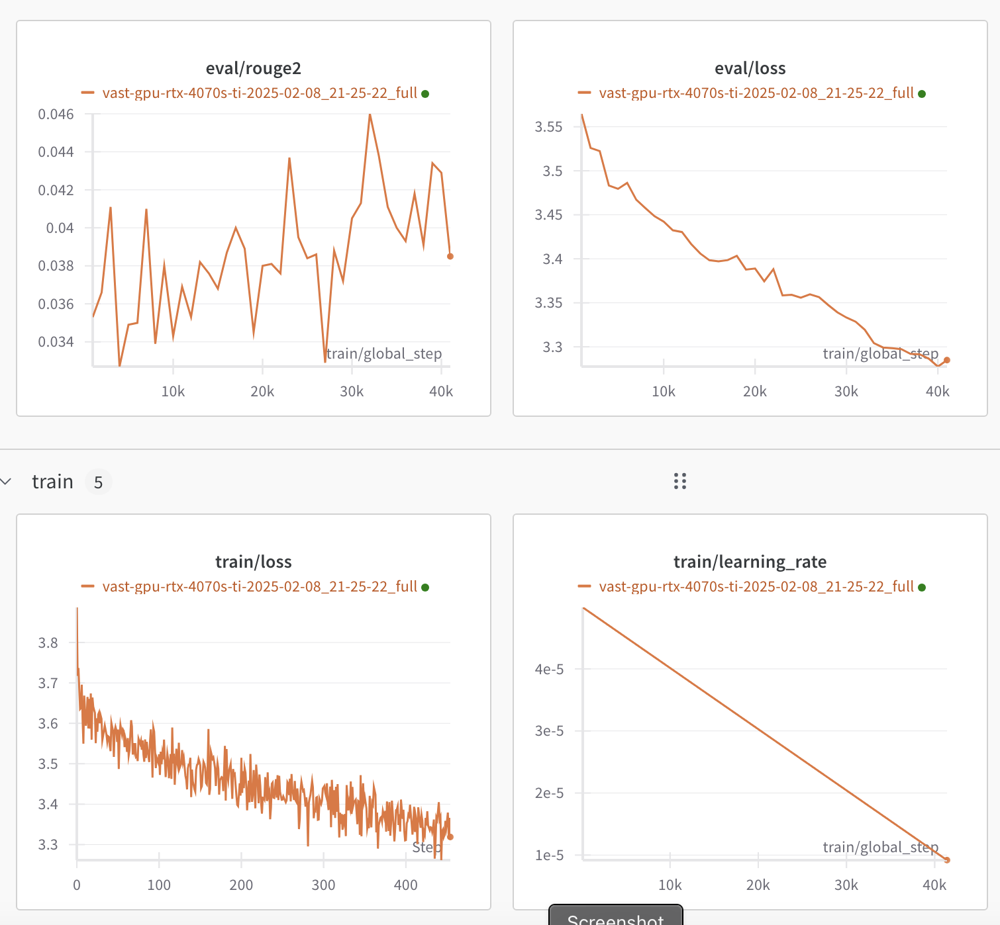

%%capture --no-display
%pip install -U datasets evaluate transformers accelerate rouge_score wandbLarge language models (LLMs) can perform all kinds of tasks ranging from translation over summarization to text generation or even multi-modal tasks involving sound, images, or videos. Usually, there are LLMs readily available for any kind of task, which can be easily found on HuggingFace. However, if there is no available model doing just what you want, then fine-tuning is the way to go. During fine-tuning, a pre-trained base or foundation model is further trained on a comparably small, task-specific dataset. Fine-tuning is much faster and cheaper than pre-training a new model from scratch.
In my case, I was looking for a model to answer questions about long documents in natural language. Most models I could find were limited to short context lengths, i.e., could not handle entire documents as input, or were not trained to output generated natural answers (see my post here).
Hence, in this blog post, I fine-tune a pre-trained Longformer Encoder-Decoder (LED) base model for generative question answering.
Longformer Encoder-Decoder (LED) Base Model
As base model, I use the Longformer Encoder-Decoder (LED) from AllenAI: allenai/led-base-16384 This base model supports very long contexts as input but, as I understand, is not yet trained for any specific downstream tasks. Note, there is a larger version of the LED base model with even more trainable weights/parameters: allenai/led-large-16384 Fine-tuning this larger model could lead to better results but also needs more resources and time to train.
There is a fine-tuned LED model for text summarization, but I did not see any for question answering. Taking the (smaller) base model directly for answering questions does not work at all:
from transformers import pipeline
qa_pipeline = pipeline(task="text2text-generation", model="allenai/led-base-16384")
# Abstract from "Attention is all you need" by Vaswani et al.: https://arxiv.org/abs/1706.03762
abstract = """The dominant sequence transduction models are based on complex recurrent or
convolutional neural networks that include an encoder and a decoder. The best
performing models also connect the encoder and decoder through an attention
mechanism. We propose a new simple network architecture, the Transformer,
based solely on attention mechanisms, dispensing with recurrence and convolutions
entirely. Experiments on two machine translation tasks show these models to
be superior in quality while being more parallelizable and requiring significantly
less time to train. Our model achieves 28.4 BLEU on the WMT 2014 Englishto-German translation task...
"""
question = "What's a transformer'?"
input_text = f"question: {question} context: {abstract}"
qa_pipeline(input_text, max_length=100)[0]['generated_text']Device set to use mps:0
Input ids are automatically padded from 144 to 1024 to be a multiple of `config.attention_window`: 1024"question: What's a transformer? In this context: The dominant sequence transduction models are based on complex recurrent or non-convolutional neural networks that include an encoder and a decoder. The best-performing models also connect the encoder and decoder through an attention-mechanism. We propose a new simple network architecture, the Transformer, that is based on a network architecturebased solely on attention mechanisms, dispensing with recurrence and convolutions, and integrating them"The model’s “answer” is basically just a repetition of the provided context, including the question.
Let’s see if fine-tuning can improve the answers. But first, we need a suitable dataset.
Task-Specific Dataset (Long-Form Question Answering)
Finding a Suitable Dataset
My task of interest is answering questions in natural language given a (potentially long) context. Since I do not have the means of collecting and creating my own dataset, I was looking for a suitable dataset online.
The well-known SQuAD dataset is only suitable for extractive question answering, where the answer is a span text from the provided context. The DuoRC dataset with questions and answers about a given movie plot can be used for both extractive and generative/abstracitve Q&A. However, I found the answers to be overly short, often just a few words, and not always very natural.
Finally, I found a suitable dataset for long-form question answering (LFQA) with natural, multi-sentence answers to questions based on provided contexts (details on this dataset). The dataset is a successor of facebook’s ELI5 dataset (explain like I’m five), which is no longer available. Details are in this blog post by the dataset’s authors.
Analyzing and Adjusting the Dataset
To get familiar with the dataset and understand what kind of inputs and outputs the fine-tuned model has to handle, I visualized the length of contexts (model input, together with the questions) as well as the length of the expected answers (model output) in the dataset. Since I am interested in the length in terms of number of tokens (relevant for fine-tuning later), I first tokenized the contexts and answers with the LED base model’s tokenizer.
The context lengths are quite normally distributed with a few quite long contexts, but most rather short:
Since I am interested in long contexts, it is fine to have a few contexts that are much longer than the others.
The answer lengths have an even stronger long-tail distribution with some few answers that were overly long (up to ~6000 tokens, even longer than the context!).
Since I did not want my fine-tuned model to create overly long answers, I filtered these examples out of the dataset and made my own version of the dataset with answers only up 512 tokens. This means the maximum answer length is roughly 12x shorter at the cost of 10% less training data.
My filtered dataset is available here: stefanbschneider/lfqa-max-answer-length-512 The notebook I used for creating the filtered dataset as well as the plots is also in the repository: process-lfqa-dataset.ipynb
An example in the dataset looks like this:
{
"question": "what's the difference between a forest and a wood?",
"answer": "They're used interchangeably a lot. You'll get different answers from different resources, but the ...",
"context": [
"Wood is divided, according to its botanical origin, into two kinds: softwoods, ...",
"Processing and products differs especially with regard to the distinction between softwood and hardwood ..."
]
}Fine-Tuning
Now that the dataset is ready, the data has to be prepared and the model has to be loaded and configured for fine-tuning.
Let’s start by importing the necessary libraries and loading the LED base model and tokenizer.
from typing import Optional
from datasets import load_dataset
from transformers import (
Seq2SeqTrainer,
Seq2SeqTrainingArguments,
AutoTokenizer,
AutoModelForSeq2SeqLM,
GenerationConfig,
)
# load model and tokenizer
model_name = "allenai/led-base-16384"
# Load model and enable gradient checkpointing to reduce memory during training (at the cost of speed)
model = AutoModelForSeq2SeqLM.from_pretrained(model_name)
model.gradient_checkpointing_enable()
tokenizer = AutoTokenizer.from_pretrained(model_name)Preparing the Data
Next, I create two functions for processing the data for training and validation. These functions prepare the data in batches of size 2 (larger batches do not fit onto my GPU). I found that batch size 1 did not work at all; the loss quickly dropped to zero and the model stopped learning.
Since each question is paired with a list of multiple contexts, these contexts are concatenated to the corresponding question into one single string, which is given as input to the model. Note that the expected output length is also set to 512 tokens here.
BATCH_SIZE: int = 2
def process_data_to_model_inputs(batch):
# combine context strings and questions to one input
input = [
f"question: {question}, context: {' '.join(context)}"
for question, context in zip(batch["question"], batch["context"])
]
# tokenize the inputs and labels
inputs = tokenizer(
input,
padding="max_length",
truncation=True,
# Max supported article/context length + question.
max_length=8192,
)
outputs = tokenizer(
batch["answer"],
padding="max_length",
truncation=True,
# Since I limit the answers to 512 tokens in the dataset, I can also limit the max_length here
max_length=512,
)
# The following settings are copied from the fine-tuning notebook provided by AllenAI:
# https://colab.research.google.com/drive/12LjJazBl7Gam0XBPy_y0CTOJZeZ34c2v?usp=sharing
batch["input_ids"] = inputs.input_ids
batch["attention_mask"] = inputs.attention_mask
# create 0 global_attention_mask lists
batch["global_attention_mask"] = len(batch["input_ids"]) * [
[0 for _ in range(len(batch["input_ids"][0]))]
]
# since above lists are references, the following line changes the 0 index for all samples
batch["global_attention_mask"][0][0] = 1
batch["labels"] = outputs.input_ids
# We have to make sure that the PAD token is ignored
batch["labels"] = [
[-100 if token == tokenizer.pad_token_id else token for token in labels]
for labels in batch["labels"]
]
return batch
def load_and_process_dataset(split: str, dataset_limit: Optional[int] = None):
"""Load and process the dataset for training or validation. Optionally limit the number of samples."""
dataset = load_dataset("stefanbschneider/lfqa-max-answer-length-512", split=split)
# optionally reduce the data sets to a small fraction
if dataset_limit is not None:
dataset = dataset.select(range(dataset_limit))
# Process the dataset with the function above. Afterwards, remove the original columns.
dataset = dataset.map(
process_data_to_model_inputs,
batched=True,
batch_size=BATCH_SIZE,
remove_columns=["context", "question", "answer"],
)
# Format the dataset to torch
dataset.set_format(
type="torch",
columns=["input_ids", "attention_mask", "global_attention_mask", "labels"],
)
return datasetFor development and experimentation, it is useful to only load a small fraction of the dataset, using the dataset_limit argument I introduced above:
# Load and process datasets; limit to small size for experimentation
train_data = load_and_process_dataset("train", dataset_limit=128)
val_data = load_and_process_dataset("validation", dataset_limit=16)huggingface/tokenizers: The current process just got forked, after parallelism has already been used. Disabling parallelism to avoid deadlocks...
To disable this warning, you can either:
- Avoid using `tokenizers` before the fork if possible
- Explicitly set the environment variable TOKENIZERS_PARALLELISM=(true | false)Configuring the Model and Training
With the data loaded and ready for training, both the model and the training have to be configured. The generation config defines how the model generates new answers. Here, I set answers to be 100 to 512 tokens long.
# Create and set the model's generation config
generation_config = GenerationConfig(
# The generated answer should be 100-512 tokens long
max_length=512,
min_length=100,
early_stopping=True,
num_beams=4,
length_penalty=2.0,
# Don't repeat n=3-grams (same words in same order) in the generated text --> more natural
no_repeat_ngram_size=3,
decoder_start_token_id=tokenizer.cls_token_id,
bos_token_id=tokenizer.bos_token_id,
)
model.generation_config = generation_configThe training arguments control the training procedure as well as how (often) the model is saved, evaluated, and how training is monitored.
# Set training arguments
training_args = Seq2SeqTrainingArguments(
predict_with_generate=True,
eval_strategy="steps",
per_device_train_batch_size=BATCH_SIZE,
per_device_eval_batch_size=BATCH_SIZE,
# fp16 only works on GPU, not on M1 mps. mps is used by default if it's available
#fp16=True,
output_dir="models",
logging_steps=10, # for proper training: 100,
eval_steps=1000,
#save_steps=500,
save_total_limit=1,
gradient_accumulation_steps=1,
num_train_epochs=1,
# Save to HF hub & log to wandb
#push_to_hub=True,
#hub_model_id="stefanbschneider/led-base-16384-lfqa-ans-len-512",
log_level="info",
report_to="wandb",
run_name="test-run",
)I use batch size 2 (set above) and save the model locally to “models”.
For logging, I use Weights & Biases, which is also the default. For that to work, you need a free W&B account. logging_steps determines the frequency (in number of optimization steps) in which the training results are logged locally and to W&B. Similarly, eval_steps controls how often the evaluation is run on the val_data prepared above. During training, a model checkpoint is saved locally every save_steps, maintaining at most save_total_limit checkpoints locally (then overwriting old checkpoints). I do not use gradient accumulation, which can mimic higher batch sizes even with less memory. Finally, num_train_epochs sets the number of training epochs, i.e., how often training is repeated on the training set.
These paramters together with the size of the training set (above limited to 128 for debugging) determine the overall number of optimization steps during training:
\[\text{num\_steps} = \frac{\text{num\_examples\_in\_data}}{\text{batch\_size} * \text{gradient\_accumulation}} * \text{epochs}\]
If push_to_hub=True, new checkpoints are automatically pushed to the HuggingFace hub. This is definitely recommended when running the full fine-tuning, so that the model is safely stored online and can easily be used later on. This needs a HuggingFace account. Once the account is created, log in locally with the CLI: huggingface-cli login and paste an access token to connect with your account.
Training and Monitoring
To evaluate the model on the validation set, we need to define a validation function that computes some metric of interest. It seems like long-form question answering is generally hard to evaluate automatically (see paper), so I just resort to the ROUGE score, which is often used in summarization. It measures the similarity between the predicted answer by the model and the expected answer from the dataset.
import evaluate
rouge = evaluate.load("rouge")
def compute_metrics(pred) -> dict[str, float]:
"""Compute rouge score during validation/evaluation"""
labels_ids = pred.label_ids
pred_ids = pred.predictions
pred_str = tokenizer.batch_decode(pred_ids, skip_special_tokens=True)
labels_ids[labels_ids == -100] = tokenizer.pad_token_id
label_str = tokenizer.batch_decode(labels_ids, skip_special_tokens=True)
rouge_output = rouge.compute(
predictions=pred_str, references=label_str, rouge_types=["rouge2"]
)["rouge2"]
# Return rouge2 F1 score
return {"rouge2": round(rouge_output, 4)}Finally, putting all this together, we can start training:
trainer = Seq2SeqTrainer(
model=model,
processing_class=tokenizer,
args=training_args,
compute_metrics=compute_metrics,
train_dataset=train_data,
eval_dataset=val_data,
)
trainer.train()
# Optionally, push the final trained model to the HuggingFace hub
# trainer.push_to_hub()huggingface/tokenizers: The current process just got forked, after parallelism has already been used. Disabling parallelism to avoid deadlocks...
To disable this warning, you can either:
- Avoid using `tokenizers` before the fork if possible
- Explicitly set the environment variable TOKENIZERS_PARALLELISM=(true | false)
huggingface/tokenizers: The current process just got forked, after parallelism has already been used. Disabling parallelism to avoid deadlocks...
To disable this warning, you can either:
- Avoid using `tokenizers` before the fork if possible
- Explicitly set the environment variable TOKENIZERS_PARALLELISM=(true | false)
***** Running training *****
Num examples = 128
Num Epochs = 1
Instantaneous batch size per device = 2
Total train batch size (w. parallel, distributed & accumulation) = 2
Gradient Accumulation steps = 1
Total optimization steps = 64
Number of trainable parameters = 161,844,480
Automatic Weights & Biases logging enabled, to disable set os.environ["WANDB_DISABLED"] = "true"
huggingface/tokenizers: The current process just got forked, after parallelism has already been used. Disabling parallelism to avoid deadlocks...
To disable this warning, you can either:
- Avoid using `tokenizers` before the fork if possible
- Explicitly set the environment variable TOKENIZERS_PARALLELISM=(true | false)
huggingface/tokenizers: The current process just got forked, after parallelism has already been used. Disabling parallelism to avoid deadlocks...
To disable this warning, you can either:
- Avoid using `tokenizers` before the fork if possible
- Explicitly set the environment variable TOKENIZERS_PARALLELISM=(true | false)
wandb: Currently logged in as: stefanbschneider to https://api.wandb.ai. Use `wandb login --relogin` to force relogin
wandb: Using wandb-core as the SDK backend. Please refer to https://wandb.me/wandb-core for more information.
huggingface/tokenizers: The current process just got forked, after parallelism has already been used. Disabling parallelism to avoid deadlocks...
To disable this warning, you can either:
- Avoid using `tokenizers` before the fork if possible
- Explicitly set the environment variable TOKENIZERS_PARALLELISM=(true | false)
huggingface/tokenizers: The current process just got forked, after parallelism has already been used. Disabling parallelism to avoid deadlocks...
To disable this warning, you can either:
- Avoid using `tokenizers` before the fork if possible
- Explicitly set the environment variable TOKENIZERS_PARALLELISM=(true | false)
huggingface/tokenizers: The current process just got forked, after parallelism has already been used. Disabling parallelism to avoid deadlocks...
To disable this warning, you can either:
- Avoid using `tokenizers` before the fork if possible
- Explicitly set the environment variable TOKENIZERS_PARALLELISM=(true | false)
Saving model checkpoint to models/checkpoint-64
Configuration saved in models/checkpoint-64/config.json
Configuration saved in models/checkpoint-64/generation_config.json
Model weights saved in models/checkpoint-64/model.safetensors
tokenizer config file saved in models/checkpoint-64/tokenizer_config.json
Special tokens file saved in models/checkpoint-64/special_tokens_map.json
Training completed. Do not forget to share your model on huggingface.co/models =)
Tracking run with wandb version 0.19.5
Run data is saved locally in
/Users/stefanshschneider/Projects/private/blog/posts/llm-fine-tuning/wandb/run-20250209_132357-haehdkmt
View project at https://wandb.ai/stefanbschneider/huggingface
[64/64 16:11, Epoch 1/1]
| Step | Training Loss | Validation Loss |
|---|
TrainOutput(global_step=64, training_loss=3.9099715799093246, metrics={'train_runtime': 989.3982, 'train_samples_per_second': 0.129, 'train_steps_per_second': 0.065, 'total_flos': 691252437712896.0, 'train_loss': 3.9099715799093246, 'epoch': 1.0})Based on the calculation above, we get \(\frac{128}{2} = 64\) optimization steps for this small example training run. Training progress is logged every 10 steps to Weights & Biases. There, you can see, among other metrics, that the training loss is gradually decreasing, indicating that the model is learning something:
Full Training Run on Vast.ai*
In the example above, I limited the size of the dataset to a very small fraction. For proper fine-tuning, the full dataset should be used and training should be repeated for multiple epochs. Similarly, logging, eval, and save frequency should be adjusted and the trained model should be pushed to the HuggingFace hub.
As I do not have a GPU locally, I rented a cheap GPU from Vast.ai*.
Training on 50% of the full dataset (a bit over 100k samples) for one epoch took roughly 24 hours on the rented RTX 4070s Ti.
Monitoring the training and evaluation metrics on Weights & Biases, shows the loss slowly going down, both in training and validation, as well as the ROUGE score gradually increasing. If the loss would only decrease on the training set but not the validation set, this would indicate overfitting to the training set.

I pushed the final fine-tuned model to HuggingFace: stefanbschneider/led-base-16384-lfqa-ans-len-512
Testing the Fine-Tuned Model
To see if the fine-tuned model learned answering questions, I load it from the HuggingFace hub and ask it the same question as the base model above: What is a transformer?
%%capture --no-display
tuned_pipeline = pipeline(
task="text2text-generation",
model="stefanbschneider/led-base-16384-lfqa-ans-len-512",
)
# Abstract from "Attention is all you need" by Vaswani et al.: https://arxiv.org/abs/1706.03762
abstract = """The dominant sequence transduction models are based on complex recurrent or
convolutional neural networks that include an encoder and a decoder. The best
performing models also connect the encoder and decoder through an attention
mechanism. We propose a new simple network architecture, the Transformer,
based solely on attention mechanisms, dispensing with recurrence and convolutions
entirely. Experiments on two machine translation tasks show these models to
be superior in quality while being more parallelizable and requiring significantly
less time to train. Our model achieves 28.4 BLEU on the WMT 2014 Englishto-German translation task...
"""
question = "What's a transformer'?"
input_text = f"question: {question} context: {abstract}"tuned_pipeline(input_text)[0]['generated_text']'A transformer is a transformer that is a transformer that is a transformer that is a transformer that is'While the model does not just repeat the input like the base model before, i.e., the format looks better, the answer itself is rubbish, unfortunately :/
I am not sure why the answer is so bad. Possibly because the fine-tuning did not even complete a single epoch on the entire training dataset (only half of it). Maybe, results get better with more training; at least that’s what the decreasing loss is suggesting.
I am somewhat disappointed by the outcome, but hope that the generall appraoch of fine-tuning still makes sense and is useful to others. If you have ideas of how I could improve the performance of the fine-tuned model, I would love to hear your suggestions (contact info is on my website)!
What’s Next?
Try it yourself:
- Load and use my fine-tuned model directly: stefanbschneider/led-base-16384-lfqa-ans-len-512
- Or load the dataset (stefanbschneider/lfqa-max-answer-length-512) and follow the script for fine-tuning it yourself:
led-finetune-lfqa-train.py - Rent a GPU at Vast.ai*
Related blog posts:
- Generative Document Question Answering with HuggingFace
- Building a Simple Q&A App with HuggingFace and Gradio
Additional Resources:
*: Links to Vast.ai are affiliate links.